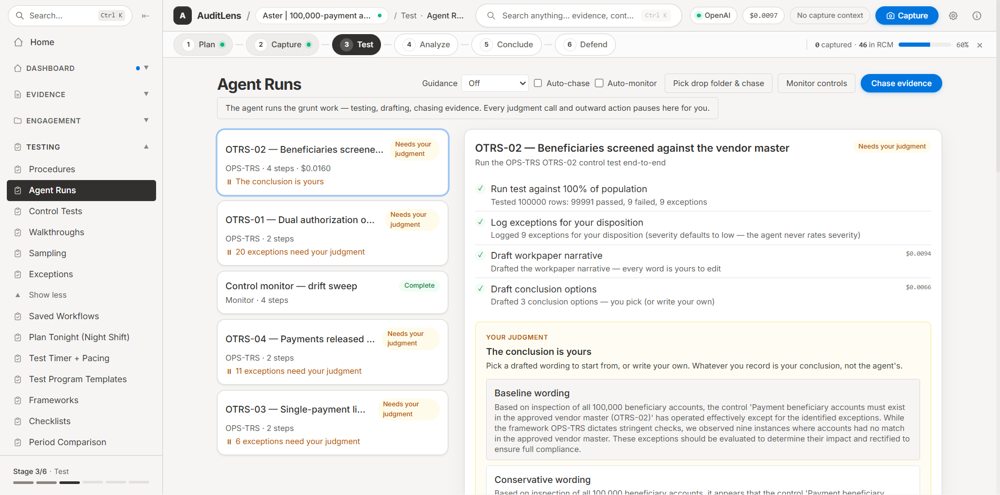
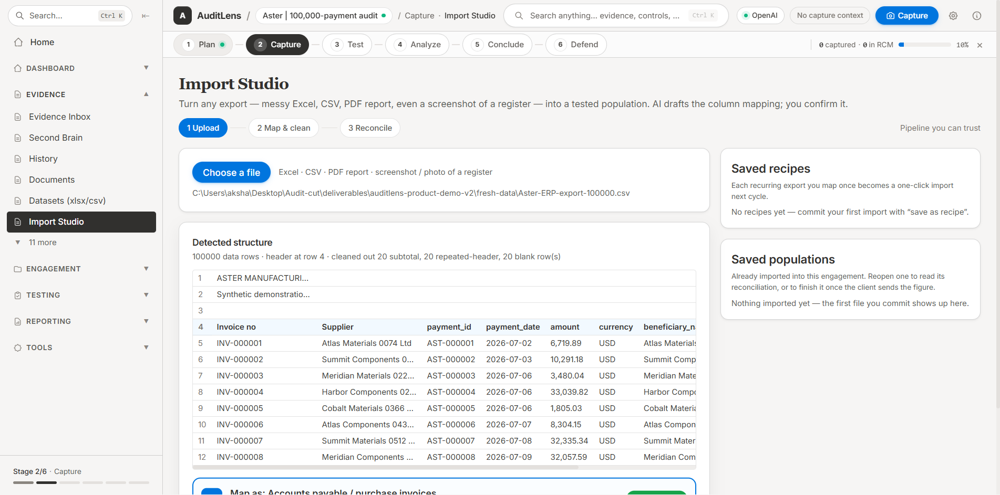

AuditLens turns any export into a tested population, runs the fieldwork, and drafts the workpaper — then stops at every judgment call, because that one is yours.
One-time $499 · Windows 10/11 · Your own AI key

Built for
An audit is a judgment supported by evidence. Almost none of the week goes into the judgment.
It goes into pulling the export, cleaning the export, tying it back to something independent, sampling because testing all of it was never realistic, chasing the screenshot, retyping what the screenshot showed, and writing the same paragraph you wrote last quarter.
AuditLens does that part. It reads the messy file, reconciles it, tests every row rather than forty of them, keeps a hash-chained record of where each piece of evidence came from, and drafts the narrative in the language your methodology already uses.
It never rates a risk, never clears an exception and never signs anything. Every conclusion is drafted for you to accept, rewrite or throw away — and the file records which one you did.
1.1
Hit Ctrl+Shift+S anywhere on screen. AuditLens hashes the capture, reads what is in it, and drafts the observation, the risk framing and the workpaper paragraph around it. Export the RCM to Excel or the workpaper to Word with tracked changes you can accept line by line.
Captured evidence → drafted workpaper → exported RCM, in one unbroken take.
1.2
Import Studio takes the messy export — Excel, CSV, a PDF report, a photo of a register — maps the columns, reconciles the row count against an independent figure and hands you a population. Then every row gets tested, with the evidence for each exception attached to it.
A 186-row privileged-access listing, 100% tested, 15 exceptions with row-level provenance. Sampling is still there when the population will not come.
1.3
Point it at a control and it executes the test, logs the exceptions, drafts the narrative and drafts three conclusions to choose between. Every judgment call and every outward action — an email to the client, a sign-off, a severity — stops and waits for you.
Run it overnight under a spend cap and wake up to a queue of decisions, not a queue of work.
1.4
Tool Studio compiles a plain-English test into a sandboxed tool with a methodology sheet a reviewer can read and sign off. The sign-off is bound to the tool’s hash, so a changed tool is an unsigned tool — and next quarter it replays on the new data.
Three-way match, duplicate vendor bank details, weekend postings — written once, reused every cycle.

Your keys, your data
OpenAI, Anthropic, Gemini, Azure OpenAI, Bedrock, or a local model through Ollama. Evidence lives on your machine; what you submit for analysis goes straight from your machine to the provider you configured. There is no AuditLens server in the middle.
Evidence you can defend
Every capture is hashed. Every event — who ran what, which exception moved, who signed off — lands in an append-only, hash-chained ledger, and human judgments are signed with a key that belongs to the person who made them. The chain is verified at every launch.
Frameworks
SOX, SOC 2, ISO 27001, PCI DSS, NIST and more ship as versioned packs: requirements, suggested controls, procedures and evidence specs. Your scope, exclusions and local edits are snapshotted into the engagement, so a pack update never moves the ground under a finished test.
Review
Reviewer and preparer are separate people with separate keys, and the app refuses to let anyone sign their own work. Working alone is supported — as an explicit, disclosed sole-practitioner basis that shows up on the workpaper cover, never as a silent exception.
Auditor independence
AuditLens is a desktop application with no account and no backend. Projects, evidence and workpapers are files on your disk (or a folder your team shares). Analysis calls go directly from your machine to the provider whose key you entered, on their enterprise API terms. We never see the engagement, and we could not produce it if someone asked us to.
No AuditLens server in the middle
The full application, yours to keep, with twelve months of framework and pack updates included. After that, $149/year keeps the updates coming — new framework and assessment packs, connectors and model support — and if you skip it, the app you bought carries on working.
Buy and download nowLemon Squeezy · instant .exe download · all sales final
Global hotkey capture with markup before you confirm
Import Studio: Excel, CSV, PDF, Word and screenshots
100% population testing, plus random, stratified and MUS sampling
Agent runs, overnight scheduling and spend caps
Tool Studio with hash-bound reviewer sign-off
Workpapers to Word with AI edits as tracked changes
Excel RCM, PowerPoint and SharePoint export
Framework and assessment packs (SOX, SOC 2, ISO 27001, PCI DSS, NIST…)
PII pre-flight scan and redaction before anything leaves
Hash-chained ledger, SHA-256 evidence integrity, signed sign-offs
Multi-engagement staffing, review queues and portfolio view
Your own AI key — the full ITGC engagement recorded on this page cost $0.22 of AI
Yes. AuditLens uses a bring-your-own-key model for privacy and cost control. Bring a key from OpenAI, Anthropic, Google, Azure OpenAI or Bedrock — or point it at a local model through Ollama. The app walks you through setup, and a $5 credit goes a very long way — see the next answer.
Evidence, projects and workpapers stay on your machine or on a folder your team shares. Content you submit for analysis goes directly from your machine to the provider whose key you configured, on their enterprise API terms — there is no AuditLens server in between, and you can revoke the key at any time.
Windows 10 and Windows 11 (64-bit). Mac and Linux builds may follow.
Very little, because most of the work is not AI. The full ITGC engagement recorded for this page — evidence captured, analysed, drafted into workpapers and exported — cost $0.22 in total, billed by your provider rather than by us. Building a tool in Tool Studio is a single AI call and every later run of it is free, because it executes on your machine. Your provider and running spend sit in the title bar, and agent runs can be capped so an overnight run cannot spend more than you allowed.
Excel (.xlsx/.xls), CSV, PDF and Word files, plus photos and screenshots of a register. Import Studio detects the real header row, cleans out subtotals and repeated headers, drafts the column mapping for you to confirm, and reconciles the row count against an independent figure before anything becomes a population.
No. It drafts — observations, narratives, conclusion options, remediation wording — and it flags things you would want to see. Severity, disposition and the conclusion are yours, and the ledger records which wording you accepted, edited or rejected.
Yes. Workpapers export to Word (.docx) with AI edits landing as tracked changes authored “AuditLens AI”, so a reviewer accepts or rejects them one at a time. Control matrices export as an Excel RCM, findings as PowerPoint, and evidence can be pushed to SharePoint Online with its metadata.
Test all of it. The sampling engine is still there — random, stratified and monetary-unit, with sample sizes computed from confidence, tolerable error and expected error — for the populations nobody can hand you in full.
A pre-flight scan flags SSNs, Luhn-validated card numbers, emails, phone numbers, IP addresses and API-key-shaped strings before you send anything, and the redaction editor blacks out, blurs or pixelates what you select, with the redaction logged. It is a tool you drive, not a silent filter — you decide what leaves your machine.
Yes. Self-review is refused by default, which would otherwise leave a sole practitioner unable to close an engagement — so there is an explicit sole-practitioner basis you acknowledge, and it is disclosed on the sign-off record, in the ledger and on the workpaper cover. It is never applied quietly.
Because the product is a digital download, all sales are final. Watch the demo and read this page before buying — the full Refund Policy is here.
$499 once. Installer downloads immediately, add your own AI key, and the built-in sample engagement gives you something real to try it on.
Built by a working internal auditor. Questions about your methodology, a framework you need mapped, or whether it fits your team — ask directly.